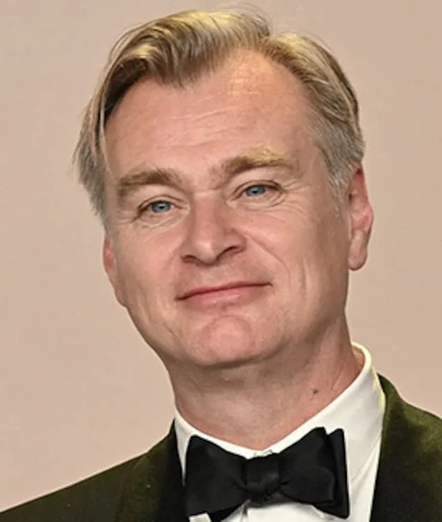
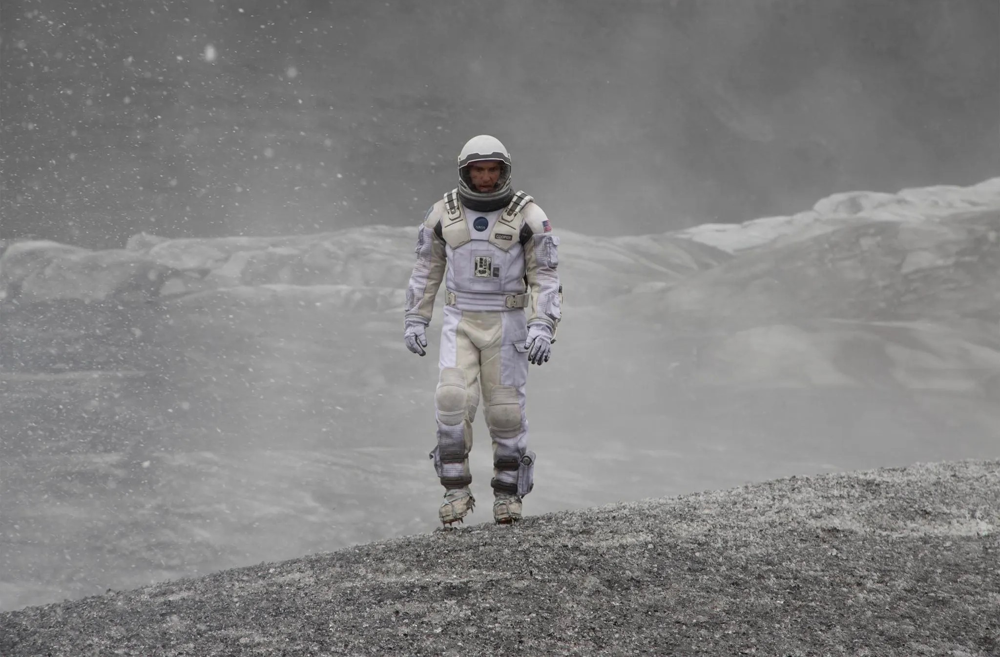
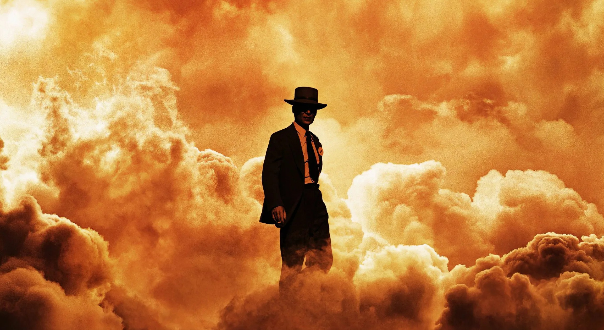
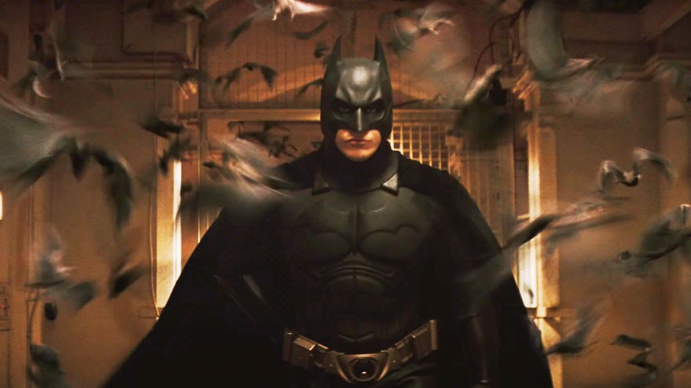
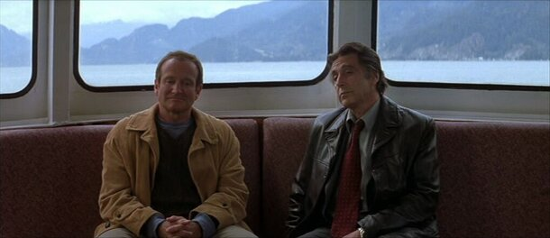
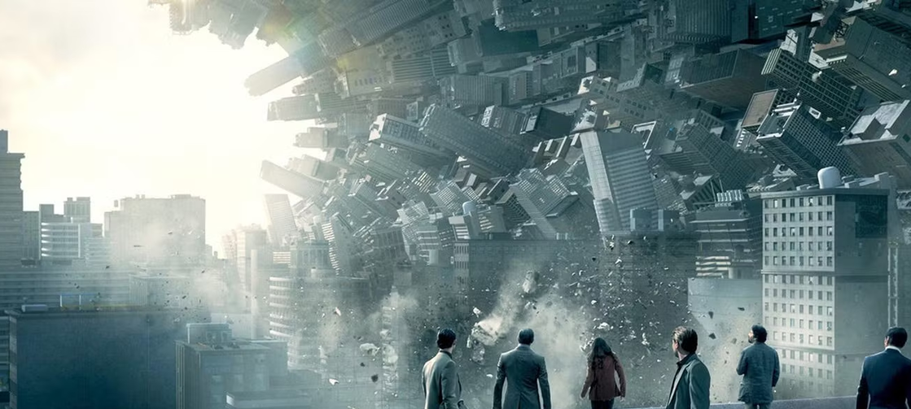
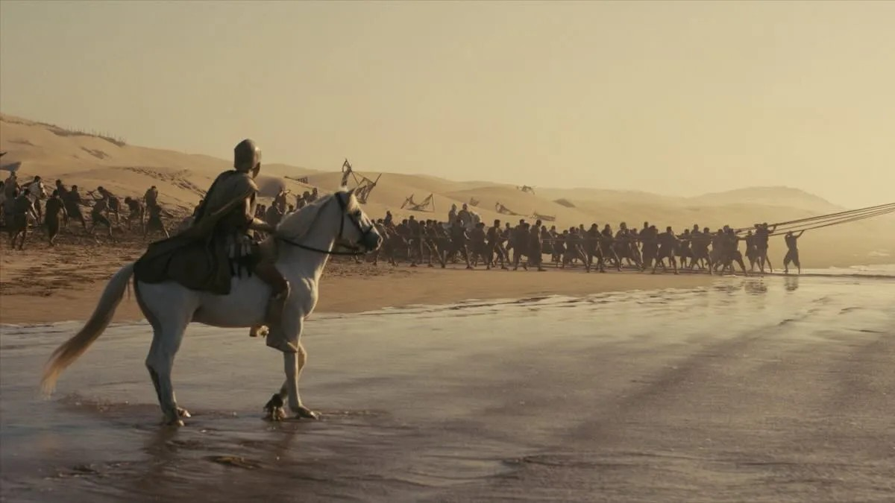

Кристофер Нолан
30.07.1970
Лондон, Англия
Кристофер Нолан родился в 1970 году в Лондоне в семье британца (рекламного директора) и американки (стюардессы).
У него есть двое братьев, включая сценариста Джонатана Нолана.
С будущей женой и продюсером Эммой Томас он познакомился в университете, и с тех пор она работает над всеми его фильмами.
Вместе с ней он основал продюсерскую компанию Syncopy.
Нолан известен сложными нелинейными сюжетами,
любовью к практическим эффектам (минимум компьютерной графики) и философскими темами времени, памяти и морали.
Его любимые жанры — психологический триллер, научная фантастика и нуар.
Известные фильмы

Интерстеллар
2014 год
научная фантастика, приключения, драма

Оппенгеймер
2023 год
эпический биографический триллер

Бэтмен: Начало
2005 год
супергероика, боевик, неонуар, приключения

Бессонница
2002 год
детектив, триллер

Начало
2010 год
научная фантастика, боевик, триллер, драма

Одиссея
2026 год
эпический фильм, фэнтези, боевик, приключения
Награды

Премия «Оскар»
2 победы
6 номинаций

Премия «Золотой глобус»
1 победа
6 номинаций